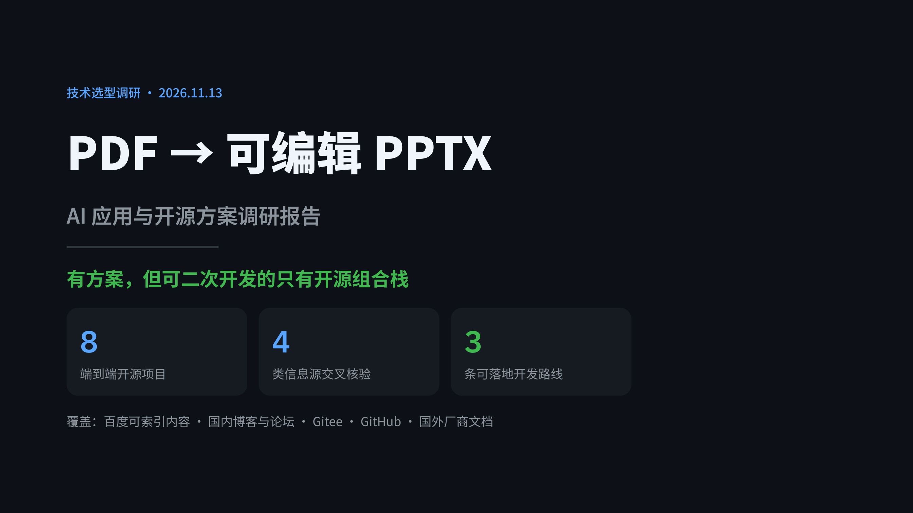
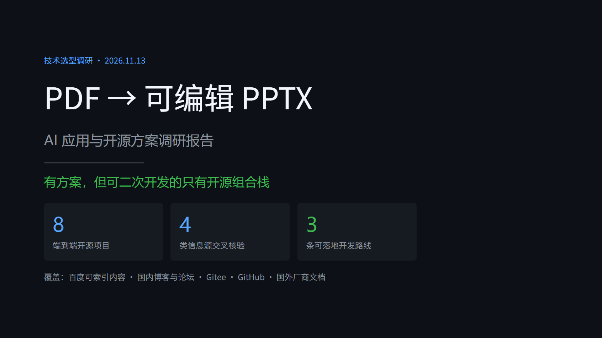
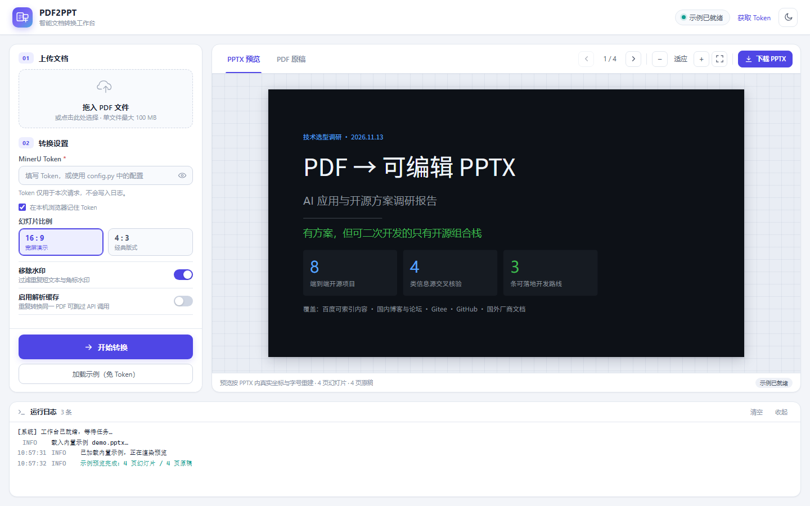
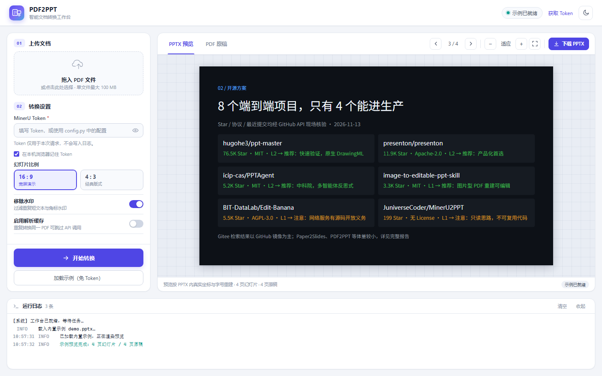
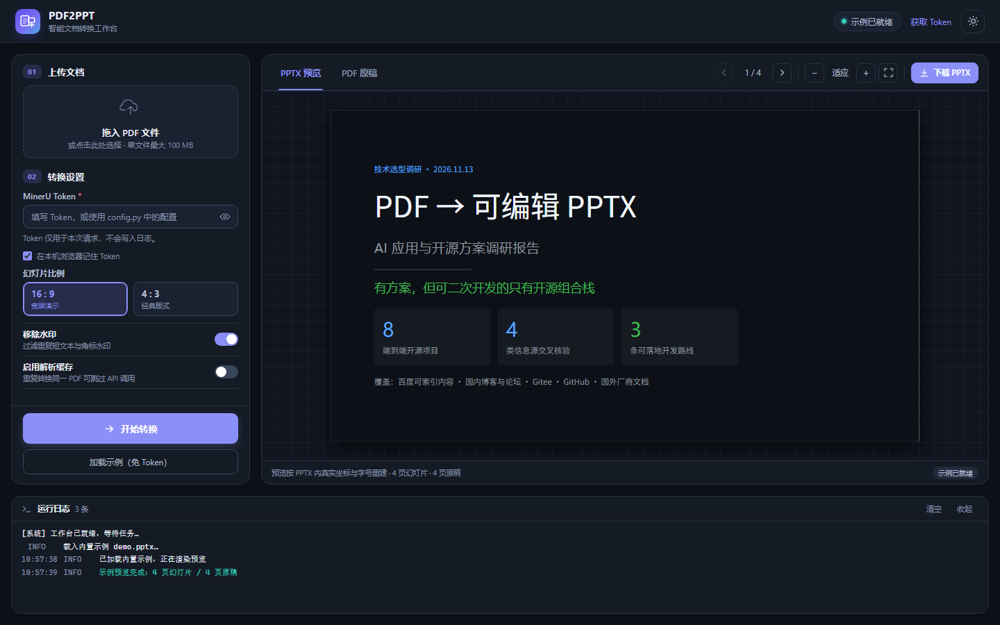
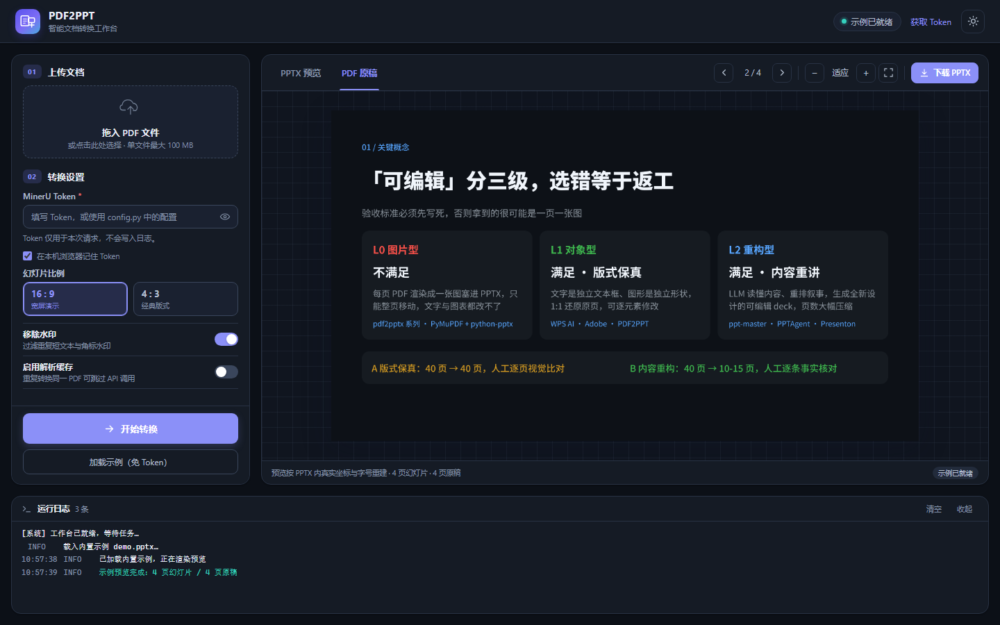
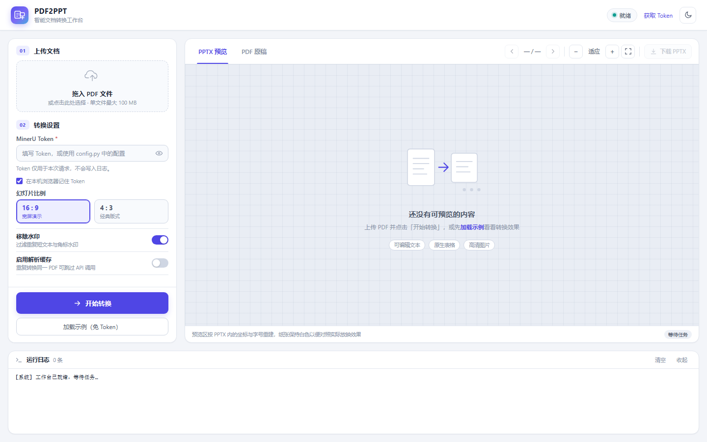

界面验收 · 真实浏览器渲染
PDF2PPT Web 工作台 · 关键页面预览
覆盖浅色 / 深色主题、PPTX 重建预览、PDF 原稿对照、翻页状态与上传前空状态。点击任意图片可放大查看原图。
视口 1440 × 900示例：4 页自有调研汇报（深色稿）
免 Token 内置 demo2026-11-14
素材对照
示例素材是项目自带的「PDF → 可编辑 PPTX」调研汇报：左侧是扁平化的 PDF 原稿（无文本层），
右侧是配套的同源可编辑 PPTX 在内置预览器里的重建效果。两者内容同源、用于说明「可编辑元素重建」，
并非 MinerU 实时转换的产物。

BEFORE
转换前 · PDF 原稿
纯矢量页面、无文本层，整页内容不可直接编辑。

AFTER
转换后 · 可编辑元素重建示意
深色底、卡片与文字均为独立形状，预览器按 PPTX 真实坐标还原。
界面状态

01
浅色主题 · 工作台主视图
左侧上传与参数设置、右侧按 PPTX 真实坐标重建的深色封面、底部运行日志。/?demo=1&theme=light

02
翻页 · 第 3 页卡片版式
验证圆角卡片、多列文本与颜色还原，工具栏页码显示 3 / 4。

03
深色主题 · 深色稿也能看清边界
主题只改变工具外壳，幻灯片保持原始背景；描边把深色画布从深色舞台里托出来。/?demo=1&theme=dark

04
PDF 原稿对照 · 深色 / 第 2 页
切换到「PDF 原稿」标签逐页比对，两个视图页码相互独立。

05
上传前 · 初始空状态
未载入示例时的引导页，下载按钮与翻页控件置灰，日志区保持待命。